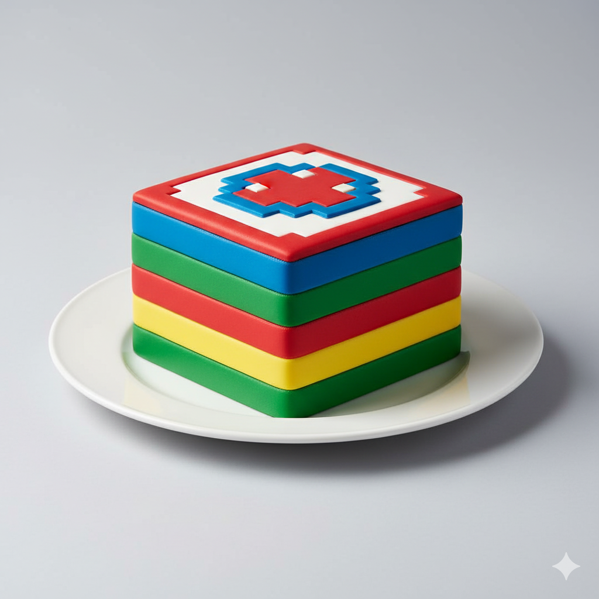
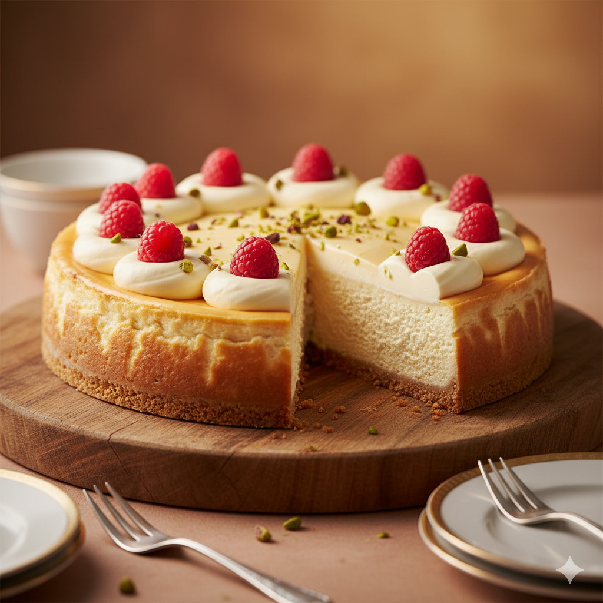
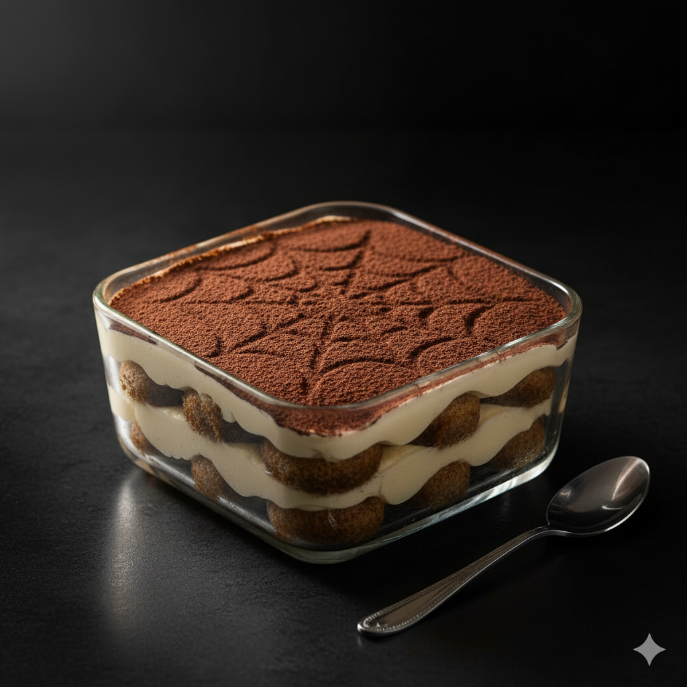

Pixel burger Menu
Appetizer items
- Mini-Loots
Petites bouchées croustillantes, simples à attraper, pensées comme un butin rapide
- Chips Mana
Chips fines et nerveuses, légèrement épicées, faites pour recharger l’énergie entre deux burgers
- fire mushroom
Champignons poêlés façon “power-up”, relevés avec une touche de piment. Saveur chaude, montée rapide, effet boost immédiat
Main Quest
-
The Healer
Version légère et fraîche : légumes croquants, sauce douce, équilibre assumé. Le burger conçu pour remettre ton compteur à zéro.
-
3 Hits Combo Menu
Triple impact : croustillant, fondant, savoureux. Trois textures, trois saveurs qui s’enchaînent comme un combo réussi.
- Final BOSS
Gros calibre : viande épaisse, fromage intense, sauce signature. Une construction massive réservée à ceux qui veulent affronter le dernier niveau.
Bonus Dessert
-
Pixel Cake 
Gâteau carré façon “pixel”, moelleux et sucré, avec des couches nettes comme un sprite bien dessiné.
-
Cheezy Cheesecake 
Cheesecake crémeux, très généreux, saveur fromage doux renforcée. Un dessert “full comfort”, pensé pour finir la partie en douceur.
-
Spider-missu 
Tiramisu revisité, léger et gourmand, avec un motif cacao façon toile. Un dessert qui s’accroche bien, même après un gros burger.